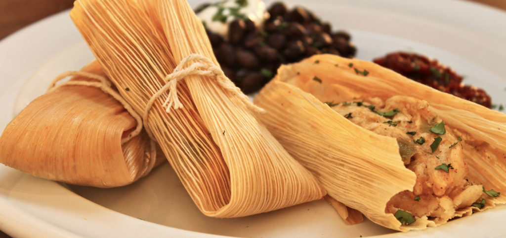

Comidas Norteñas !!
Recetas fáciles.

Hoy cocinamos "Tamales Tucumanos".
Realizados con la receta de Beba y la colaboración de Fran, otro amante de la cocina como yo. Espero lo disfruten. ¡¡Fácil y Deliciosos!!
"Me apasiona cocinar para las personas que amo. Me gusta una buena presentación en la mesa y acompañar con un clima íntimo cada momento en el que agasajo a mi/s invitado/s".